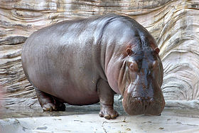
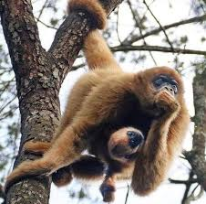
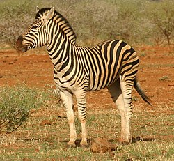

Zoológico
Um casal de leões e uma ursa-parda ganharam novo lar no Zoológico de Curitiba, no Alto Boqueirão. Os animais vieram do zoo do Beto Carrero, em Penha, Santa Catarina, em razão de uma reorganização populacional da instituição do estado vizinho. “Assim como nós, eles estão em processo de certificação. Na mudança de recintos, para ter mais espaço para os animais, foi necessária essa realocação”, explica o diretor de Pesquisa e Conservação da Fauna da Secretaria do Meio Ambiente, Edson Evaristo.“Como tínhamos experiência no manejo das espécies, nos oferecemos para o recebimento”, completa.
-
Hipopótamo Glória
O hipopótamo-comum ou hipopótamo-do-nilo é um mamífero herbívoro de grande porte da África subsariana.
-
Mico-leão-dourado
O mico-leão-dourado é um primata endêmico do Brasil, da família Callitrichidae e gênero Leontopithecus.
-
Zebra
As zebras são mamíferos que pertencem à família dos cavalos, os equídeos, nativos da África central e do sul.